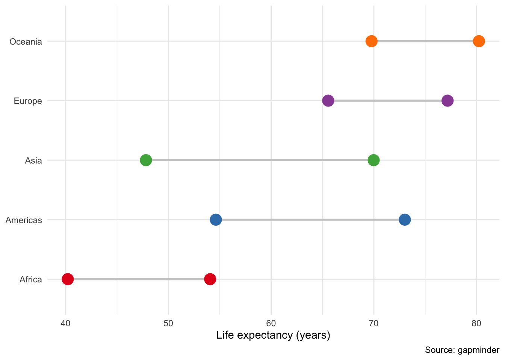

Packages used in this post
library(tidyverse)
library(broom)
library(modelsummary)
library(ggsci)
library(gapminder)
theme_set(theme_minimal())
data("gapminder")Paw Hansen
June 9, 2023
Here is a quick post on a few basic plots you can make with geom_point. The goal is simply to celebrate the dot as a way of graphing data. Who knows? Maybe someday there will be a post on the line too! For all plots, we will be working with the gapminder data.
To get started, let’s make a classic Cleveland dot plot. These are good for providing at quick glance of summary statistics, here the average life expectancy for each continent:
One small tweak could be to highlight one of the continents. For instance, suppose your analysis was about explaining what’s going on with one particular observation. In particular, when looking at the above plot, Africa, seems to be falling behind the other continents. An easy way to highlight that would be using color:
gapminder %>%
group_by(continent) %>%
summarise(mean = mean(lifeExp, na.rm = T)) %>%
mutate(continent = fct_reorder(continent, mean)) %>%
ggplot(aes(mean, continent)) +
geom_point(aes(color = I(ifelse(continent == "Africa",
"firebrick",
"black"))),
size = 4) +
labs(x = "Years",
y = NULL,
caption = "Source: gapminder")This kind of graph is en easy but powerfull way to spark initial curiosity with readers, which is a key part of storytelling with data
Next up, we have the dot-and-whisker plot. Often, researchers and data analyst will report model estimates using tables. Some scholars, teasingly, call these ‘BUTONs’: Big Ugly Table of Numbers.
A simple way to improve presentation is to make a dot-and-whisker plot of the model estimates and corresponding uncertainties. Let’s fit a model and make a plot:
gap_model %>%
tidy(conf.int = T) %>%
filter(term != "(Intercept)") %>%
mutate(term = str_replace_all(term,
"continent",
"Continent: "),
term = str_to_title(term),
term = fct_reorder(term,
estimate)) %>%
ggplot(aes(estimate,
term,
xmin = conf.low,
xmax = conf.high)) +
geom_vline(xintercept = 0,
linetype = "dashed",
color = "grey") +
geom_pointrange() +
labs(y = NULL,
x = "Difference in years")For reference, this is what the same results would have looked like if we had used a standard regression table:
| Life expectancy | |
|---|---|
| (Intercept) | −518*** |
| (20) | |
| continentAmericas | 14.29*** |
| (0.49) | |
| continentAsia | 9.38*** |
| (0.47) | |
| continentEurope | 19.36*** |
| (0.52) | |
| continentOceania | 20.6*** |
| (1.5) | |
| year | 0.29*** |
| (0.01) | |
| population_scaled | 0.18 |
| (0.16) | |
| gdpPercap_scaled | 3.0*** |
| (0.2) | |
| Num.Obs. | 1704 |
| RMSE | 6.87 |
| R2 | 0.717 |
| + p < 0.1, * p < 0.05, ** p < 0.01, *** p < 0.001 |
The dot-and-whisker plot helps readers quickly compare the model estimates and their corresponding uncertainty.
Finally, the dumbell chart can be useful when the goal is to highlight differences, especially across groups. Let’s make one to compare the change in mean life expectancy from the 1950s to the 2000s across all five continents:
gapminder |>
mutate(decade = factor(year %/% 10 * 10)) |>
filter(decade %in% c(1950, 2000)) |>
group_by(continent, decade) |>
summarize(lifeexp = mean(lifeExp, na.rm = T)) |>
mutate(continent = fct_reorder(continent, lifeexp)) |>
ggplot(aes(lifeexp, continent,
group = decade)) +
geom_line(aes(group = continent),
color = "grey80",
linewidth = 1) +
geom_point(aes(color = continent),
size = 5) +
scale_color_brewer(type = "qual", palette = "Set1") +
labs(x = "Life expectancy (years)",
y = NULL,
caption ="Source: gapminder") +
theme(legend.position = "none")
The graph makes it easy to see that Oceania has the highest average but Asia has seen the highest growth. This might be a useful “Figure 1”; illustrating a puzzle which your paper then tries to explain.
Points or dots can be a useful way of plotting data. In this post, I have shown you three different and quite versatile plots you can use in your next analysis.